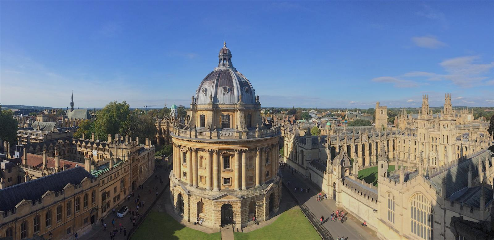

영국 학부 학비는 보통 하나의 범위로 인용됩니다. £20,000에서 £45,000 정도로요. 2026-27 공시를 확인해 보니 양쪽 끝이 다 어긋나 있었습니다. 하단은 £16,000에 가깝고, 상단은 의대를 넣는 순간 £45,000을 훌쩍 넘어갑니다.
한 학교 안에서만 £25,000이 벌어집니다
옥스퍼드는 국제학생 학부 학비를 범위로 공시합니다. 2026-27 기준 £37,380에서 £62,820이고, 임상 의학은 그보다 더 높습니다. 한 학교 안에서 £25,440이 벌어지는데, 그 차이를 만드는 건 오직 어느 과정에 합격했느냐입니다. 전공을 고정하지 않고 학교끼리 비교하면 얻는 정보가 거의 없습니다.

| 학교 | 2026-27 국제학생 학부 학비 |
|---|---|
| LJMU | £16,000 ~ 18,250 |
| 미들섹스 · 웨스트민스터 | £17,200 · £17,600 |
| 퀸메리 (QMUL) | £25,000 ~ 29,950 |
| 맨체스터 | £26,500 ~ 36,500 |
| UCL | £32,000 ~ 42,700 |
| 임페리얼 | £42,700 ~ 45,500 |
| 옥스퍼드 | £37,380 ~ 62,820 |
왼쪽이 아니라 오른쪽 열을 세로로 읽어 보세요. LJMU는 범위 전체가 옥스퍼드 하단보다 아래입니다. 그런데 맨체스터 상단은 UCL 하단과 겹치고, QMUL 상단은 맨체스터 하단에 가깝습니다. 구간이 이만큼 겹친다는 건, 더 상위 학교의 더 싼 과정이 실제로 존재한다는 뜻입니다.
실험실을 쓰는 전공이 비쌉니다
숫자 뒤의 규칙은 단순합니다. 강의실에서 끝나는 전공이 아래, 실험실을 쓰는 전공이 가운데, 임상 실습이 붙는 전공이 위입니다. 이공계 아닌 과정이 거의 없는 임페리얼은 하단부터 £42,700입니다. 학교 전체가 비싼 구간에 들어가 있는 셈입니다. 상위권 학교의 인문 계열이 중위권 학교의 공학 계열보다 쌀 수 있습니다.
생활비는 추정이 아니라 정해진 숫자입니다
비자 계산에서 학비는 절반입니다. 내무부는 런던 월 £1,529, 런던 외 월 £1,171을 최대 9개월분 증빙하도록 정해 두었습니다. 각각 £13,761과 £10,539입니다. 실제로 얼마 쓰느냐와 무관하게 계좌에 있어야 하는 금액이고 협상의 여지가 없습니다. 대학 페이지도 이걸 틀리게 적어 둡니다. 우리가 읽은 한 국제학습센터는 런던 외 기준을 아직 £1,136으로 안내하고 있었습니다.
한 줄로 정리하면
학교를 비교하기 전에 전공부터 고정하세요. 숫자를 더 크게 움직이는 쪽은 학교 이름이 아니라 전공입니다. 그다음 그 과정 페이지에서 입학 연도 학비를 확인하고, 생활비 증빙액을 위에 얹으면 됩니다.